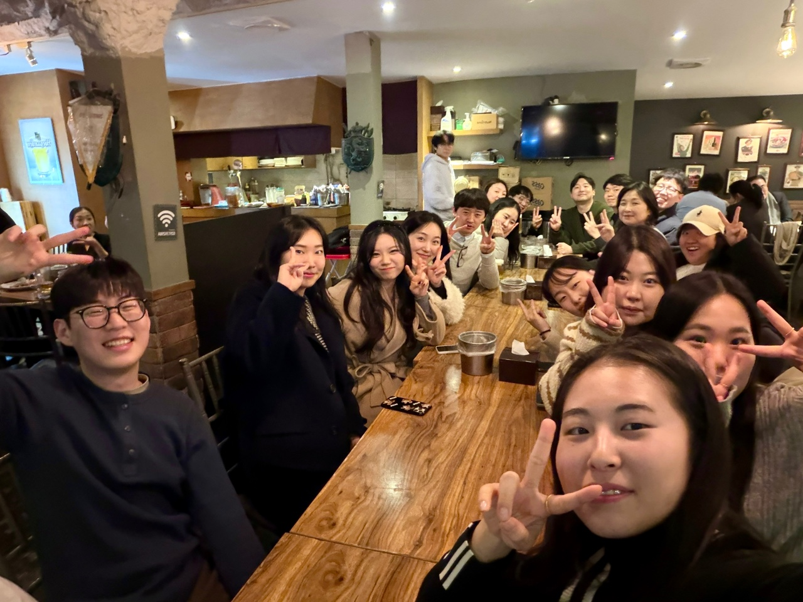

Members
Lab members
Researchers and graduate students currently working in the Health and Social Policy Lab, Korea University.
Full-time researchers
- Kibeum Kwon권기범 · MPH/PhD2025–
- Jeongyeon Joo주정연 · MPH/PhD2024–
- Kyungsuk Ryu류경석 · MPH/PhD2023–
- Minjin Jo조민진 · MPH/PhD2022–
- Yebin Ahn안예빈 · MPH2025–
- Jaeho Gwak곽재호 · MPH2025–
- Hyunbee Shim심현비 · Undergraduate2025–
Part-time researchers
- Sodam Kim김소담 · MPH/PhD2025–
- Inhee Park박인희 · MPH/PhD2025–
- Jihyun Pyo표지현 · PhD2026–
- Yoojin Choi최유진 · PhD2022–
- Joohyun Han한주현 · PhD2022–
- Suyeong Ko고수영 · PhD2020–
- Juhee Ha하주희 · MPH2022–
Staff
- Kihoon Kim김기훈 · Research administration · Editorial assistant, Health Politics
Alumni
Where graduates have gone
Since 2010, some thirty graduate students and postdoctoral researchers have trained in the lab. They now work across academia, public-health research institutes, national and municipal health institutions, and social-policy and welfare agencies; a selection appears below.
Academia
- Daseul Moon문다슬(2019) · Professor, Department of Preventive Medicine, Inje University
- Minsung Sohn손민성(2019) · Professor, Division of Health Policy & Management, Korea University
- Hyun-Hee Heo허현희(2017) · Research Professor, Graduate School of Public Health, Korea University
- Jihye Jeon전지혜(2016) · Professor, Department of Social Welfare, Incheon National University
- Hongjo Choi최홍조(2016) · Professor, Division of Health Policy & Management, Korea University
- Gum-Ryeong Park박금령(2014) · Professor, Division of Health Policy & Management, Korea University
- Seok Hwan Kim김석환(2014) · Professor, Department of Health Information, Dongguk University
Policy & public-health research
- Xian Hua Che차선화(2019) · Daejeon Public Health Policy Institute
- Jin Sung Kim김진성(2016) · Director, Seoul Metropolitan Psychological Support Center
- Jinok Byeon변진옥(2011) · Director of Policy Research, Health Insurance Research Institute
National & municipal health institutions
- Goeun Kim김고은(2025) · National Medical Center
- Dasom Lee이다솜(2024) · National Medical Center
- Sohun Park박소현(2020) · Seoul Medical Center
- Woojin Jeong정우진(2018) · Korea Health Promotion Institute
- Gwang Hyun Lee이광현(2012) · National Health Insurance Service
Social-policy & welfare agencies
- Jaemin Kim김재민(2022) · Jeonbuk Women & Family Foundation
- Jaekyoung Lee이재경(2020) · Seoul Foundation of Women & Family
- Wook Young Seo서욱영(2014) · Korea Disabled People’s Development Institute

Prospective students interested in health and social policy, health justice, or smart healthy cities are welcome to get in touch.